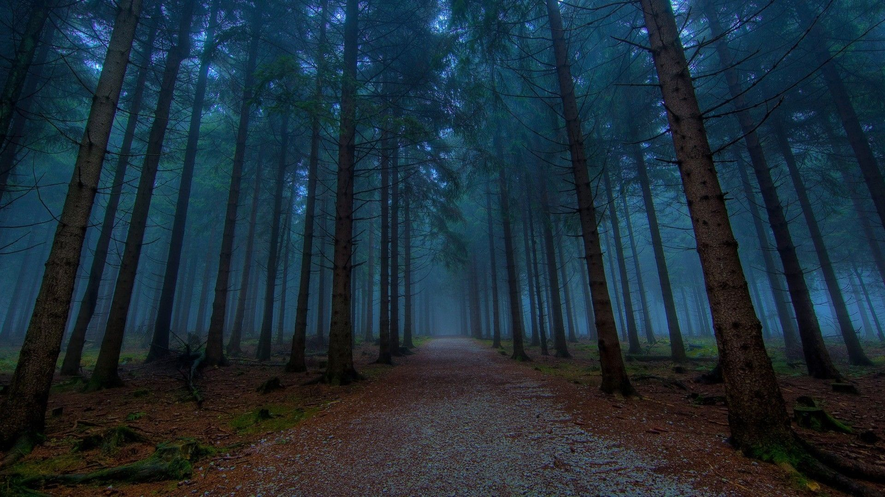

-

BIENVENIDOS A MI FANZINE
Buen dia Profesora que tal soy Jose Fiestas y este es Fanzine,este proyecto esta desarrollado con html,css y un poco de javascript,es simple pero muy pratico de utilizar solo presione el font del lado derecho para poder avanzar,espero que le guste.
-
TENER UN HOGAR ECOEFICIENTE CONTRIBUYE A LA ECONOMÍA FAMILIAR Y AL AMBIENTE:
!En estos tiempos de aislamiento social,se ha reducido la contaminación ambiental ¡
¿En qué consiste la ecoeficiencia?
La ecoeficiencia son aquellas acciones que por la cuales podemos generar un buen uso de los recursos,esto tambien debe reducir los impactos negativos al ambiente.En pocas palabras la ecoeficiencia consiste en qe tengamos conciencia de lo utilizamos.
-
Ecoeficiencia en los hogares:
En estos tiempo de aislamiento social,tenemos mucha parte población que estan usando de manera exesiva los dispositivos electronicos y esto genera el Efecto invernadero.
¿Que es el Efecto Invernadero?
Cientificamente es una subida de temperatura en la atmósfera,tiene un resultado de concentranción de gases,principalmente el dioxido de carbono.
-

Pero Podemos disminuir el Efecto Invernadero:
Sigue estos consejos y lo lograras¡
⚫ Podemos cambiar nuestros focos por unos ahorradores.
⚫ Desconectar los aparatos electronicos que no estan en uso.
⚫ Evitar el uso de objetos de plastico,platos,vasos,cubiertos,servilletas,ya que estos son desechables.
-
Y ESTO ES TODO MISS
Espero que le haya gustado y hasta la clase del jueves chauuuuu.